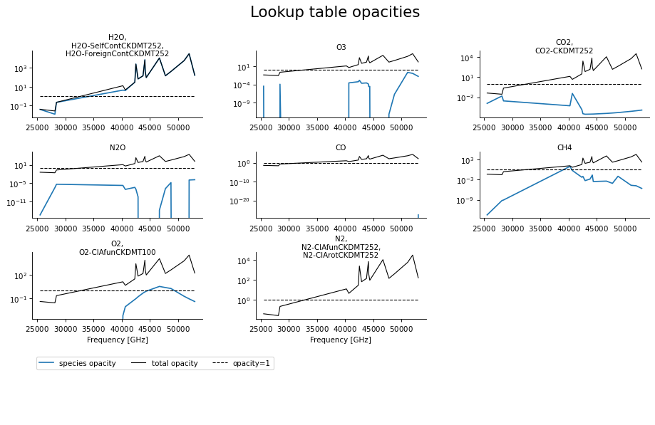
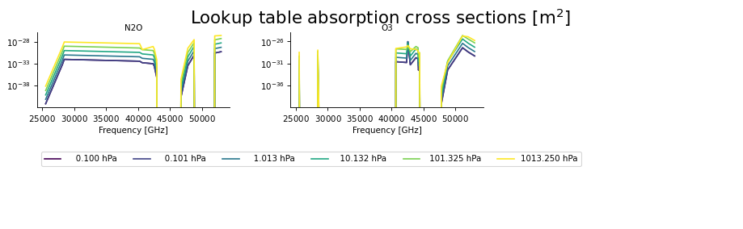

pyarts.plots.plot_arts_lookup¶
- pyarts.plots.plot_arts_lookup(lookup, opacity=True, z=None, g=9.80665, r=287.0570048852906, tpert=0, vmrpert=0, pressures=None, cols=3, species=None)[source]¶
Visualize an ARTS lookup table.
Plots the opacity or the absorption cross sections based on an ARTS lookup table.
- Parameters
lookup (pyarts.classes.GasAbsLookup) – ARTS lookup table object.
opacity (bool, optional) – Set to False to plot the absorption cross sections.
z (ndarray, optional) – Altitude profile. Optional input for opacity calculation. If not given, the layer thicknesses are calculated based on the hypsometric formula.
g (float, optional) – Gravity constant. Uses Earth’s gravity by default.
r (float, optional) – Gas constant for dry air. Uses constant for Earth by default.
tpert (int, optional) – Index of temperature perturbation to plot.
vmrpert (int, optional) – Index of vmr perturbation for nonlinear species to plot.
pressures (ndarray(int), optional) – Pressure levels to plot. If not given, up to 6 pressure levels are selected.
cols (int, optional) – Species to plot per row.
- Returns
Matplotlib Figure and Axes objects.
- Return type
matplotlib.figure.Figure, ndarray(AxesSubplot)
Examples:
from os.path import join, dirname import matplotlib.pyplot as plt import pyarts lookup_file = join(dirname(pyarts.__file__), '../test/plots/reference', 'abs_lookup_small.xml') fig, ax = pyarts.plots.plot_arts_lookup(pyarts.xml.load(lookup_file)) fig.suptitle('Lookup table opacities') fig.subplots_adjust(top=0.88) plt.show()
(Source code, png, hires.png, pdf)

from os.path import join, dirname import matplotlib.pyplot as plt import pyarts from pyarts.classes import ArrayOfArrayOfSpeciesTag, SpeciesTag lookup_file = join(dirname(pyarts.__file__), '../test/plots/reference', 'abs_lookup_small.xml') fig, ax = pyarts.plots.plot_arts_lookup( pyarts.xml.load(lookup_file), species=ArrayOfArrayOfSpeciesTag([[SpeciesTag("N2O")], [SpeciesTag("O3")]]), opacity=False) fig.suptitle('Lookup table absorption cross sections [m$^2$]') fig.subplots_adjust(top=0.88) plt.show()
(Source code, png, hires.png, pdf)

{kind=link}
{kind=link}
{kind=link}
{kind=link}